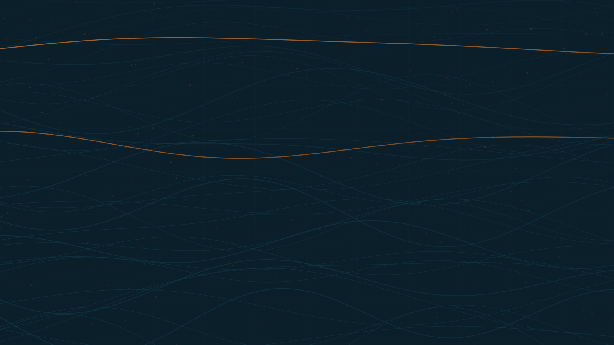
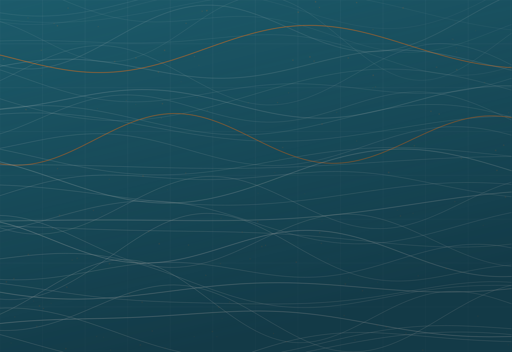

Economic Opportunity
Enterprise, employment and investment that stays in the local economy.

Projects and partnerships carried out with and through the institutions and communities closest to the work.

From Compassion to Opportunity. From Assistance to Sustainable Development.
Five areas that every GCFPAD project is measured against.
Enterprise, employment and investment that stays in the local economy.
Education, skills, health and the capacity of people to act on their own priorities.
The ability of a community to absorb a shock and keep functioning.
The physical and institutional systems development depends on.
Relationships that outlast a single project cycle.
New projects slot into this grid without touching the homepage. Send the details and the photograph and it appears here.
Get in touchCommunities, governments and foundations all come to GCFPAD the same way: with something specific they are trying to move.